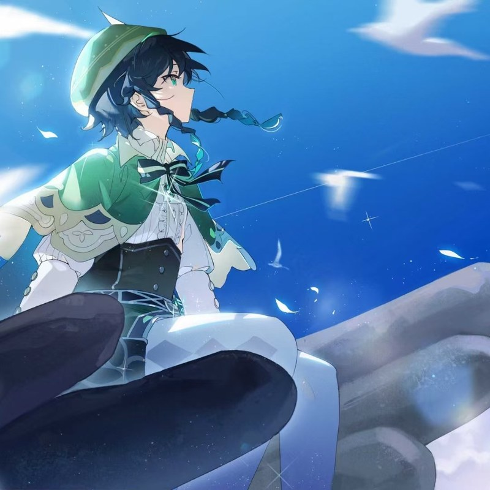

WHO AM I
游戏里的名字叫「优游a5」。刚开服的时候觉得只是一个普通二游，不觉得有什么特别的， 真正入坑是 2024 年夏天，被同学拉进来当他的专属萌新， 结果他退坑了，我留到了现在。
平时喜欢一个人慢慢探索，不爱查攻略地图，宁可绕路也要自己爬到那个山顶。 所以我的探索度一直不算高，但每个角落基本都踩过一次，截图也就攒了两百多张。
这个网页作为新生实践课作业，也是我自己的一种执着吧。随着这款游戏的用户群体规模越来越大， 衍生出了很多 IP，但我喜欢这款游戏不是因为它有多火，而是因为它构建了一个有血有肉的广阔世界。
让人沉浸其中看蒙德城、璃月港等地的风景，也在角色的自我反思和成长中学会了热爱世界、热爱集体， 永远充满希望。所以我想借此机会回忆一下旅途最初的意义，找回我对这款游戏最初的热爱。
TIMELINE
被同学拉进游戏，在蒙德城门口转了半小时没找到任务点，但看到风车转动的那一下就决定留下了。
从望舒客栈往下看的那片梯田，成了我对这款游戏审美的第一次改观。也是从这时开始认真截图。
没有攻略、没有满命，靠三个人反复试了十七次。那天晚上截图存了满屏，比拿满星还开心。
硬盘里的图从散乱的文件夹变成了按地区分类的相册，也是这次整理，才有了做这个网站的念头。
用 HTML、CSS 和一点点 JavaScript 把这几年的东西摆上网页，算是给自己一个交代。